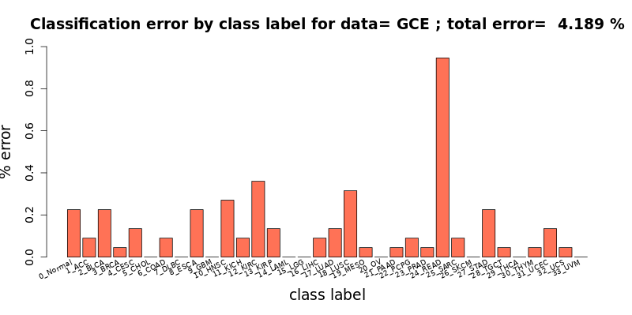

The GCN_Cancer application employs graph convolutional network (GCN) models
to classify the gene expression data samples from The Cancer Genonme Atlas (TCAG)
as 33 designated tumor types or as normal. It has been trained on 10,340
cancer samples and 731 normal tissue samples from TCGA dataset.
This application, reimplemented in Keras from the original version developed in Tensorflow,
will be used as a biological example
by class #6 of the course "Deep Learning by Example on Biowulf".
Allocate an interactive session and run the program. Sample session:
[user@biowulf]$ sinteractive --mem=240g --gres=gpu:a100:1,lscratch:100 -c24 [user@cn4466 ~]$module load GCN_Cancer [+] Loading singularity 3.10.3 on cn0830 [+] Loading cuDNN/8.1.0.77/CUDA-11.2.2 libraries... [+] Loading CUDA Toolkit 11.2.2 ... [+] Loading GCN_Cancer 20220825(a lower-case name, gcn_cancer, will also work).
[user@cn4466 ~]$ mkdir -p data
[user@cn4466 ~]$ cp $GCN_CANCER_DATA/{Block_,Adj_}{GCE,GCES,PPI,PPIS}.mat data
Here, the following abbreviations have been used:
GCE - (gene expression) dataset with gene co-expression type of association between genes GCES - same as GCE, but additionally includes singleton genes PPI - (gene expression) dataset with protein-protein interaction type of association between genes PPIS - same as PPI, but additionally includes singleton genesThe use of the executable preprocess.py is optional. With proper command line options, it will produce a customized/balanced data matrix and/or a customized adjacency matrix, any or both of which can be (optionally) used as input by the executables train.py and predict.py instead of the original matrices of data samples Block_{GCE,GCES,PPI,PPIS}.mat and/or original adjacency matrices Adj_{GCE,PPI}.mat. that are provided together with the GCN_Cancer code.
user@cn4466 ~]$ preprocess.py -h
usage: preprocess.py [-h] [-A] [-B] [-d data_type] [-f fold] [-N num_elements]
[-S smote_variant] [-t threshold] [-v]
optional arguments:
-h, --help show this help message and exit
-A, --custom_adjacency
compute the custom adjacency matrix
-B, --balance_data balance training data
-f fold, --fold fold id of the portion of input data to be used for prediction:
0 | 1 | 2 | 3 | 4; default=4
-N num_elements, --num_elements num_elements
target number of nonzero elements in a custom
adjacency matrix
-S smote_variant, --smote_variant smote_variant
smote alrorithm to be used for data balancing: SMOTE |
SMOTE_TomekLinks | SMOTE_ENN | Borderline_SMOTE1 |
Borderline_SMOTE1 | Borderline_SMOTE2 | ADASYN | AHC |
LLE_SMOTE | distance_SMOTE | SMMO | polynom_fit_SMOTE
| Stefanowski | ADOMS | Safe_Level_SMOTE | MSMOTE |
DE_oversampling | SMOBD | SUNDO | MSYN | SVM_balance |
TRIM_SMOTE | SMOTE_RSB | ProWSyn | SL_graph_SMOTE |
NRSBoundary_SMOTE | LVQ_SMOTE | SOI_CJ | ROSE |
SMOTE_OUT | SMOTE_Cosine | Selected_SMOTE | LN_SMOTE |
MWMOTE | PDFOS | IPADE_ID | RWO_sampling | NEATER |
DEAGO | Gazzah | MCT | ADG | SMOTE_IPF | KernelADASYN
| MOT2LD | V_SYNTH | OUPS | SMOTE_D | SMOTE_PSO |
CURE_SMOTE | SOMO | ISOMAP_Hybrid | CE_SMOTE |
Edge_Det_SMOTE | CBSO | E_SMOTE | DBSMOTE | ASMOBD |
Assembled_SMOTE | SDSMOTE | DSMOTE | G_SMOTE |
NT_SMOTE | Lee | SPY | SMOTE_PSOBAT | MDO |
Random_SMOTE | ISMOTE | VIS_RST | GASMOTE | A_SUWO |
SMOTE_FRST_2T | AND_SMOTE | NRAS | AMSCO | SSO |
NDO_sampling | DSRBF | Gaussian_SMOTE | kmeans_SMOTE |
Supervised_SMOTE | SN_SMOTE | CCR | ANS |
cluster_SMOTE | SYMPROD
-t threshold, --threshold threshold
threshold to be used when generating adjacency matrix;
default=None
-v, --verbose increase the verbosity level of output
required arguments:
-d data_type, --data_type data_type
data type: gce | gces | ppi | ppis
For example, in order to generate a custom data matrix Block_GCE.B.mat balanced using the naive balancing algoritm, run the command:
[user@cn4466 ~]$ preprocess.py -d gce -BIn order to generate a custom data matrix balanced using one of the SMOTE variant algorithms, additionally pass the name of that algorith with option -S. We recommend using either MWMOTE or LLE_SMOTE algorithm. For example, in order to produce the custom data matrix Block_GCE.B.S_MWMOTE.mat, which is balanced using the SMOTE variant algorithm MWMOTE, run the command:
[user@cn4466 ~]$ preprocess.py -d gce -B -S MWMOTETo generate a custom adjacency matrix, specify the option -A and either the target threshold or target number of nonzero elements in the adjacency matrix. For example:
[user@cn4466 ~]$ preprocess.py -d gce -A -t 0.7 ... [user@cn4466 ~]$ preprocess.py -d gce -A -N 10000 ...The usage of the training executable train.py is as follows:
[user@cn4466 ~]$ train.py -h
usage: train.py [-h] [-A] [-b batch_size] [-B] [-d data_type]
[-D dropout_fraction] [--debug DEBUG] [-f fold] [-g num_gpus]
[-i input_checkpoint_file] [-I initializer] [-k num_kernels]
[-l learning_rate] [-L num_levels] [-e num_epochs] [-K K]
[-m model_name] [-N num_elements] [-O optimizer]
[-p pooling_layer] [-r ratio] [-S smote_variant]
[-t threshold] [-v] [-w]
optional arguments:
-h, --help show this help message and exit
-A, --custom_adjacency
use custom adjacency matrix
-b batch_size, --bs batch_size
batch size; default=50
-B, --use_balanced_data
use balanced data
-D dropout_fraction, --dropout_fraction dropout_fraction
dropout_fraction; default = 0.0
--debug DEBUG use a small subset of data for training
-f fold, --fold fold -f fold, --fold fold id of the portion of input data to be used for prediction:
0 | 1 | 2 | 3 | 4; default=4
-g num_gpus, --num_gpus num_gpus
number of gpus to use; default=1
-i input_checkpoint_file, --input_checkpoint_file input_checkpoint_file
input checkpoint file name; default: None
-I initializer, --initializer initializer
Keras weight initializer: glorot_uniform |
glorot_normal | he_uniform | he_normal |
truncated_unifirmn | truncated_normal| random_unifoirm
| random_normal | constant | zeros | ones | orthogonal
| variance_scaling ; default = glorot_uniform
-k num_kernels, --num_kernels num_kernels
num. of kernals to be used by Graph Conv layer;
default=64
-l learning_rate, --lr learning_rate
learning rate; default=1.e-4
-L num_levels, --num_levels num_levels
# of in the gc/pooling levels in the model: >= 1;
default=1
-e num_epochs, --num_epochs num_epochs
num # of epochs; default=10
-K K The hyperparameter K in ChebConv layer; default=1
-m model_name, --model_name model_name
model name: chebnet | gcnnet | densenet | gatnet;
default = chebnet
-N num_elements, --num_elements num_elements
target number of nonzero elements in a custom
adjacency matrix
-O optimizer, --optimizer optimizer
optimizer: adam | rmsprop
-p pooling_layer, --pooling_layer pooling_layer
pooling layer: DiffPool | MinCutPool; default=DiffPool
-r ratio, --ratio ratio
pooling ratio; default=1.0
-S smote_variant, --smote_variant smote_variant
smote alrorithm: OUPS | SMOTE_D | NT_SMOTE | Gazzah |
ROSE; default = OUPS
-t threshold, --threshold threshold
threshold to be used when generating adjacency matrix;
default=None
-v, --verbose increase the verbosity level of output
-w, --load_weights read weights from a checkpoint file
required arguments:
-d data_type, --data_type data_type
data type: gce | gces | ppi | ppis
For example, the simplest command to train the (default) model chebnet on the original data GCE would be:
[user@cn4466 ~]$ train.py -d gce ... Epoch 1/50 74/74 [==============================] - 103s 1s/step - loss: 1.7426 Epoch 2/50 74/74 [==============================] - 102s 1s/step - loss: 0.6460 Epoch 3/50 74/74 [==============================] - 102s 1s/step - loss: 0.4303 Epoch 4/50 74/74 [==============================] - 102s 1s/step - loss: 0.3378 Epoch 5/50 74/74 [==============================] - 102s 1s/step - loss: 0.2936 Epoch 6/50 74/74 [==============================] - 102s 1s/step - loss: 0.2584 ... ...The result of the training (i.e. network weights) will be stored in the checkpoint file located in the folder "checkpoints", in this particular case, the file
checkpoints/chebnet.gce.D_0.1.h5(here, 0.1 is the default dropout rate used by the models) To train another model on the same data, specify the model name with command line option -m
[user@cn4466 ~]$ train.py -d gce -m gcnnet ...whcich will produce a checkpoint file checkpoints/gcnnet.gce.D_0.1.h5 In order to train a model on custom data generated by the executable preprocess.py, use additionally the options that match the options used by that executable. For example:
[user@cn4466 ~]$ train.py -d gce -B -S MWMOTE -A -t 0.7 ... [user@cn4466 ~]$ train.py -d gce -B -S MWMOTE -A -N 10000The command line options for the executable predict.py are similar to, and shoulkd be consistent with, the options that were used by the training command:
[user@cn4466 ~]$ predict.py -h
[user@cn4338 6_GCNs]$ predict.py -h
usage: predict.py [-h] [-A] [-b batch_size] [-B] [-d data_type]
[-D dropout_fraction] [--debug DEBUG] [-f fold]
[-g num_gpus] [-i input_checkpoint_file] [-I initializer]
[-k num_kernels] [-l learning_rate] [-L num_levels]
[-e num_epochs] [-K K] [-m model_name] [-N num_elements]
[-O optimizer] [-p pooling_layer] [-r ratio]
[-S smote_variant] [-t threshold] [-v] [-w]
optional arguments:
-h, --help show this help message and exit
-A, --custom_adjacency
use custom adjacency matrix
-b batch_size, --bs batch_size
batch size; default=50
-B, --use_balanced_data
use balanced data
-D dropout_fraction, --dropout_fraction dropout_fraction
dropout_fraction; default = 0.0
--debug DEBUG use a small subset of data for training
-f fold, --fold fold id of the input data subset to be used for prediction:
0 | 1| 2 | 3 | 4; default=4
-g num_gpus, --num_gpus num_gpus
number of gpus to use; default=1
-i input_checkpoint_file, --input_checkpoint_file input_checkpoint_file
input checkpoint file name; default: None
-I initializer, --initializer initializer
Keras weight initializer: glorot_uniform |
glorot_normal | he_uniform | he_normal |
truncated_unifirmn | truncated_normal| random_unifoirm
| random_normal | constant | zeros | ones | orthogonal
| variance_scaling ; default = glorot_uniform
-k num_kernels, --num_kernels num_kernels
num. of kernals to be used by Graph Conv layer;
default=64
-l learning_rate, --lr learning_rate
learning rate; default=1.e-4
-L num_levels, --num_levels num_levels
# of in the gc/pooling levels in the model: >= 1;
default=1
-e num_epochs, --num_epochs num_epochs
num # of epochs; default=10
-K K The hyperparameter K in ChebConv layer; default=1
-m model_name, --model_name model_name
model name: chebnet | gcnnet | densenet | gatnet;
default = chebnet
-N num_elements, --num_elements num_elements
target number of nonzero elements in a custom
adjacency matrix
-O optimizer, --optimizer optimizer
optimizer: adam | rmsprop
-p pooling_layer, --pooling_layer pooling_layer
pooling layer: DiffPool | MinCutPool; default=DiffPool
-r ratio, --ratio ratio
pooling ratio; default=1.0
-S smote_variant, --smote_variant smote_variant
smote alrorithm: OUPS | SMOTE_D | NT_SMOTE | Gazzah |
ROSE; default = OUPS
-t threshold, --threshold threshold
threshold to be used when generating adjacency matrix;
default=0.6
-v, --verbose increase the verbosity level of output
-w, --load_weights read weights from a checkpoint file
required arguments:
-d data_type, --data_type data_type
data type: gce | gces | ppi | ppis
For example, the command
[user@cn4466 ~]$ predict.py -d gce -D 0.1 ...will use pre-trained weights stored in the checkpoint file checkpoints/chebnet.gce.D_0.1.h5 to make predictions of the class labels for the "testing" portion of the input data file Block_GCE.matR. By default, the last of the five available data portions ("folds") will be used for testing/prediction, while the ramining four portions - for training the model. The predict.py command shown above will output the results file results/chebnet.gce.D_0.1.tsv. In order to use a different way of splitting of the input data into the training and testing dataset, specify the id of the portion/fold of the data to be used for prediction, with option -f.
[user@cn4466 ~]$ cat results/chebnet.gce.D_0.1.tsv #class incorr total %err type 0 5 146 3.425 0_Normal 1 2 19 10.526 1_ACC 2 5 84 5.952 2_BLCA 3 1 226 0.442 3_BRCA 4 3 67 4.478 4_CESC 5 0 5 0.000 5_CHOL 6 2 77 2.597 6_COAD 7 0 7 0.000 7_DLBC 8 5 30 16.667 8_ESCA 9 0 33 0.000 9_GBM 10 6 92 6.522 10_HNSC 11 2 12 16.667 11_KICH 12 8 115 6.957 12_KIRC 13 3 51 5.882 13_KIRP 14 0 43 0.000 14_LAML 15 0 107 0.000 15_LGG 16 2 76 2.632 16_LIHC 17 3 109 2.752 17_LUAD 18 7 103 6.796 18_LUSC 19 1 25 4.000 19_MESO 20 0 83 0.000 20_OV 21 1 23 4.348 21_PAAD 22 2 46 4.348 22_PCPG 23 1 86 1.163 23_PRAD 24 21 36 58.333 24_READ 25 2 44 4.545 25_SARC 26 0 93 0.000 26_SKCM 27 5 78 6.410 27_STAD 28 1 18 5.556 28_TGCT 29 0 109 0.000 29_THCA 30 1 20 5.000 30_THYM 31 3 122 2.459 31_UCEC 32 1 14 7.143 32_UCS 33 0 21 0.000 33_UVM # Finally: num_corr=2127 / 2220, error= 4.189189 % # # 0_Normal -> 2_BLCA: 1 (0.045045 %) # 0_Normal -> 12_KIRC: 1 (0.045045 %) # 0_Normal -> 15_LGG: 1 (0.045045 %) # 0_Normal -> 23_PRAD: 1 (0.045045 %) # 0_Normal -> 27_STAD: 1 (0.045045 %) # 1_ACC -> 2_BLCA: 2 (0.090090 %) # 2_BLCA -> 4_CESC: 3 (0.135135 %) # 2_BLCA -> 10_HNSC: 1 (0.045045 %) # 2_BLCA -> 18_LUSC: 1 (0.045045 %) # 3_BRCA -> 0_Normal: 1 (0.045045 %) # 4_CESC -> 6_COAD: 1 (0.045045 %) # 4_CESC -> 31_UCEC: 2 (0.090090 %) # 6_COAD -> 24_READ: 2 (0.090090 %) # 8_ESCA -> 27_STAD: 5 (0.225225 %) # 10_HNSC -> 0_Normal: 1 (0.045045 %) # 10_HNSC -> 4_CESC: 3 (0.135135 %) # 10_HNSC -> 18_LUSC: 1 (0.045045 %) # 10_HNSC -> 25_SARC: 1 (0.045045 %) # 11_KICH -> 12_KIRC: 1 (0.045045 %) # 11_KICH -> 13_KIRP: 1 (0.045045 %) # 12_KIRC -> 0_Normal: 1 (0.045045 %) # 12_KIRC -> 2_BLCA: 1 (0.045045 %) # 12_KIRC -> 11_KICH: 1 (0.045045 %) # 12_KIRC -> 13_KIRP: 3 (0.135135 %) # 12_KIRC -> 16_LIHC: 1 (0.045045 %) # 12_KIRC -> 25_SARC: 1 (0.045045 %) # 13_KIRP -> 2_BLCA: 2 (0.090090 %) # 13_KIRP -> 12_KIRC: 1 (0.045045 %) # 16_LIHC -> 0_Normal: 1 (0.045045 %) # 16_LIHC -> 5_CHOL: 1 (0.045045 %) # 17_LUAD -> 18_LUSC: 2 (0.090090 %) # 17_LUAD -> 31_UCEC: 1 (0.045045 %) # 18_LUSC -> 2_BLCA: 1 (0.045045 %) # 18_LUSC -> 10_HNSC: 2 (0.090090 %) # 18_LUSC -> 17_LUAD: 3 (0.135135 %) # 18_LUSC -> 21_PAAD: 1 (0.045045 %) # 19_MESO -> 25_SARC: 1 (0.045045 %) # 21_PAAD -> 25_SARC: 1 (0.045045 %) # 22_PCPG -> 0_Normal: 1 (0.045045 %) # 22_PCPG -> 21_PAAD: 1 (0.045045 %) # 23_PRAD -> 0_Normal: 1 (0.045045 %) # 24_READ -> 6_COAD: 21 (0.945946 %) # 25_SARC -> 16_LIHC: 1 (0.045045 %) # 25_SARC -> 32_UCS: 1 (0.045045 %) # 27_STAD -> 8_ESCA: 4 (0.180180 %) # 27_STAD -> 28_TGCT: 1 (0.045045 %) # 28_TGCT -> 29_THCA: 1 (0.045045 %) # 30_THYM -> 10_HNSC: 1 (0.045045 %) # 31_UCEC -> 12_KIRC: 1 (0.045045 %) # 31_UCEC -> 20_OV: 1 (0.045045 %) # 31_UCEC -> 32_UCS: 1 (0.045045 %) # 32_UCS -> 31_UCEC: 1 (0.045045 %) # 33_UVM -> 26_SKCM: 1 (0.045998 %)Here, the label 0 corresponds to the Normal samples, and the following abbreviations have been used to designate the 33 tumor types, with labels 1 to 33:
ACC Adrenocortical carcinoma BLCA Bladder Urothelial Carcinoma BRCA Breast invasive carcinoma CESC Cervical squamous cell carcinoma and endocervical adenocarcinoma CHOL Cholangiocarcinoma COAD Colon adenocarcinoma DLBC Lymphoid Neoplasm Diffuse Large B-cell Lymphoma ESCA Esophageal carcinoma GBM Glioblastoma multiforme HNSC Head and Neck squamous cell carcinoma KICH Kidney Chromophobe KIRC Kidney renal clear cell carcinoma KIRP Kidney renal papillary cell carcinoma LAML Acute Myeloid Leukemia LGG Brain Lower Grade Glioma LIHC Liver hepatocellular carcinoma LUAD Lung adenocarcinoma LUSC Lung squamous cell carcinoma MESO Mesothelioma OV Ovarian serous cystadenocarcinoma PAAD Pancreatic adenocarcinoma PCPG Pheochromocytoma and Paraganglioma PRAD Prostate adenocarcinoma READ Rectum adenocarcinoma SARC Sarcoma SKCM Skin Cutaneous Melanoma STAD Stomach adenocarcinoma TGCT Testicular Germ Cell Tumors THCA Thyroid carcinoma THYM Thymoma UCEC Uterine Corpus Endometrial Carcinoma UCS Uterine Carcinosarcoma UVM Uveal MelanomaFinally, in order to visualize the summary provided in the results file, run the executable visualize.R:
[user@cn4466 ~]$ visualize.R results/chebnet.gce.D_0.1.tsv
[user@cn4466 ~]$ visualize.R results/chebnet.K_10.gces.D_0.1.B.S_MWMOTE.tsv
[user@cn4466 ~]$ train.py -d gce -K 20 -B -S MWMOTE -l 1.e-6 [user@cn4466 ~]$ predict.py -d gce -K 20 -B -S MWMOTEwill result in the error-free classification (!).
[user@cn4471 ~]$ exit
[user@biowulf ~] sinteractive --mem=240g --gres=gpu:a100:4,lscratch:100 --cpus-per-task=14
[user@cn4471 ~]$ mkdir -p data
[user@cn4471 ~]$ module load gcn_cancer
[user@cn4471 ~]$ cp $GCN_CANCER_DATA/{Block_,Adj_}{GCE,GCES,PPI,PPIS}.mat data
[user@cn4471 ~]$ train.py -d gces -g 4 -b 2000
End the interactive session:
[user@cn4466 ~]$ exit salloc.exe: Relinquishing job allocation 46116226 [user@biowulf ~]$
Create a batch input file (e.g. gcn_cancer.sh). For example:
#!/bin/bash
module load GCN_Cancer
mkdir -p data
cp $GCN_CANCER_DATA/{Block_,Adj_}{GCE,GCES,PPI,PPIS}.mat data
train.py -d gce
Submit this job using the Slurm sbatch command.
sbatch [--cpus-per-task=#] [--mem=#] gcn_cancer.sh